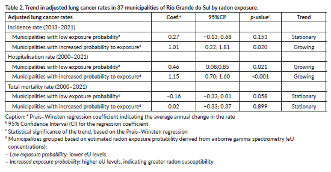

Temporal trends in lung cancer and radon gas exposure: an ecological study in Rio Grande do Sul

Resumo em Português
Objetivo: Este estudo teve como objetivo comparar as taxas de incidência, internação hospitalar e mortalidade por câncer de pulmão entre os municípios do Rio Grande do Sul de 2000 a 2021, com base na estimativa de exposição ao gás radônio.
Métodos: Foi realizado um estudo ecológico de série temporal utilizando dados do Serviço Geológico do Brasil e do Ministério da Saúde. Técnicas de geoprocessamento e a regressão de Prais-Winsten foram empregadas para a análise dos dados.
Resultados: Não foram encontradas diferenças estatisticamente significativas nas taxas médias dos desfechos ao longo do período do estudo quando agrupadas pela probabilidade de exposição ao radônio. Municípios com maiores probabilidades de exposição apresentaram uma tendência de aumento nas taxas de incidência e internação hospitalar por câncer de pulmão, enquanto a mortalidade permaneceu estável. Além disso, as taxas de internação aumentaram em municípios com menores probabilidades de exposição.
Conclusão: Este estudo demonstrou os desafios metodológicos na investigação da associação entre gases e a etiologia do câncer.